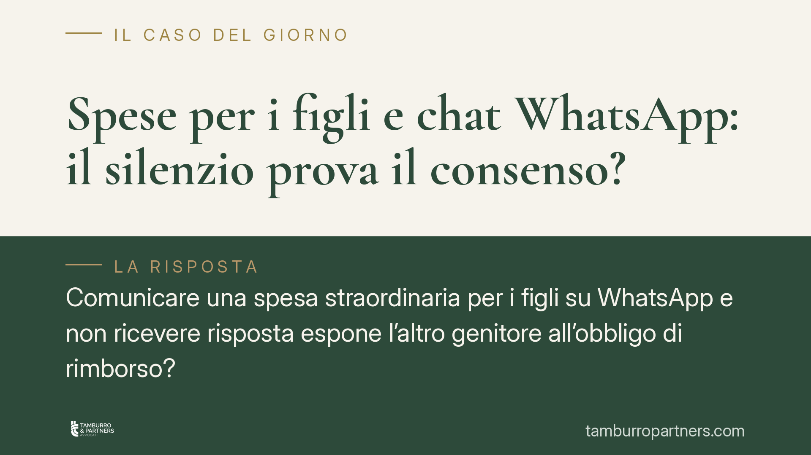

Spese per i figli e chat WhatsApp: il silenzio prova il consenso?
Comunicare una spesa straordinaria per i figli su WhatsApp e non ricevere risposta espone l'altro genitore all'obbligo di rimborso? Una recente pronuncia di merito valorizza le chat come prova della comunicazione. Ma attenzione: il silenzio non diventa consenso automatico. Restano determinanti l'interesse del minore e la congruità della spesa. Vediamo cosa dice davvero la giurisprudenza.

Il caso
Il tema è ricorrente tra genitori separati: un genitore anticipa una spesa straordinaria per il figlio — una visita specialistica, un corso, l'iscrizione a un'attività — e ne chiede il rimborso pro quota all'altro, spesso comunicando la decisione via messaggistica. Quando manca una risposta, nasce il contenzioso: quel silenzio vale come accettazione?
Una recente pronuncia del Tribunale di Palermo ha affrontato la questione valorizzando le conversazioni WhatsApp come elemento di prova della comunicazione. È bene però leggere il principio con prudenza: non esiste un automatismo per cui "nessuna risposta = consenso = rimborso del 50%". L'orientamento prevalente richiede qualcosa in più.
*(Nota redazionale: gli estremi della sentenza citata nella fonte originaria non risultano verificabili e vengono pertanto omessi in attesa di riscontro ufficiale.)*
Inquadramento normativo
Il riparto delle spese per i figli è governato dall'art. 337-ter c.c., che impone a ciascun genitore di contribuire al mantenimento in misura proporzionale al proprio reddito. La norma distingue l'ordinaria amministrazione dalle decisioni di maggiore interesse per il minore (istruzione, salute, residenza), che richiedono accordo di entrambi.
Sul riparto delle spese straordinarie è intervenuta Cass., Sez. Unite, n. 23411/2018: per le spese straordinarie "necessarie" e rispondenti all'interesse del figlio, il genitore che le ha anticipate può agire per il rimborso senza necessità di un nuovo titolo esecutivo, quando il provvedimento già prevede il concorso nelle straordinarie. Resta ferma la valutazione sulla congruità e sulla destinazione della spesa all'interesse del minore.
Quanto alle chat, l'art. 2712 c.c. attribuisce alle riproduzioni informatiche piena efficacia probatoria dei fatti rappresentati solo se la parte contro cui sono prodotte non ne disconosce la conformità in modo tempestivo e specifico. In assenza di disconoscimento, il messaggio fa prova. Attenzione però al confine: le spunte di lettura provano la ricezione del messaggio, non l'adesione nel merito alla spesa proposta.
Implicazioni pratiche
Il punto delicato è proprio questo. Il valore della chat si ferma alla dimostrazione che l'altro genitore è stato informato. Da ciò non discende automaticamente un consenso.
Per le spese straordinarie "ordinarie" e coerenti con precedenti consuetudini familiari, il silenzio prolungato può essere letto come assenza di dissenso, specie se la spesa è congrua e nell'interesse del figlio. Ma per le decisioni di maggiore interesse — una scuola privata costosa, un intervento non urgente, un'attività onerosa — il consenso tacito non basta: serve un'intesa effettiva, e il genitore informato ha l'onere di manifestare un dissenso motivato in tempi ragionevoli.
In concreto: chi riceve la comunicazione non può ignorarla confidando nell'inefficacia del silenzio; chi anticipa la spesa non può dare per acquisito il rimborso solo perché non ha ricevuto repliche. La valutazione resta caso per caso.
Cosa fare in concreto
- Comunica per iscritto e in modo dettagliato: indica importo, causale, data e interesse del figlio, così da avere prova della comunicazione e della sua congruità.
- Rispondi sempre, anche per dissentire: se non condividi la spesa, invia un dissenso tempestivo e motivato. Il silenzio può indebolire la tua posizione.
- Conserva integralmente le conversazioni: non cancellare messaggi e, se possibile, acquisiscile tramite copia forense, perché in giudizio potresti doverne provare la genuinità.
- Distingui le spese: per le decisioni di maggiore interesse pretendi un accordo esplicito; non affidarti al consenso tacito.
- Verifica il titolo: controlla cosa prevede il provvedimento di separazione o divorzio sul riparto delle straordinarie prima di agire per il rimborso.
La messaggistica è ormai prova a pieno titolo, ma non trasforma il silenzio in accettazione incondizionata. La chiarezza nelle comunicazioni e la prontezza nelle risposte restano la tutela più efficace per entrambi i genitori.
---
Contributo informativo a cura di Tamburro & Partners Avvocati. Non costituisce parere legale.
Ogni famiglia ha il suo equilibrio.
Separazione, divorzio, affidamento, assegno: se vuoi un confronto riservato su una specifica situazione, scrivi allo studio. Ti rispondiamo entro un giorno lavorativo.